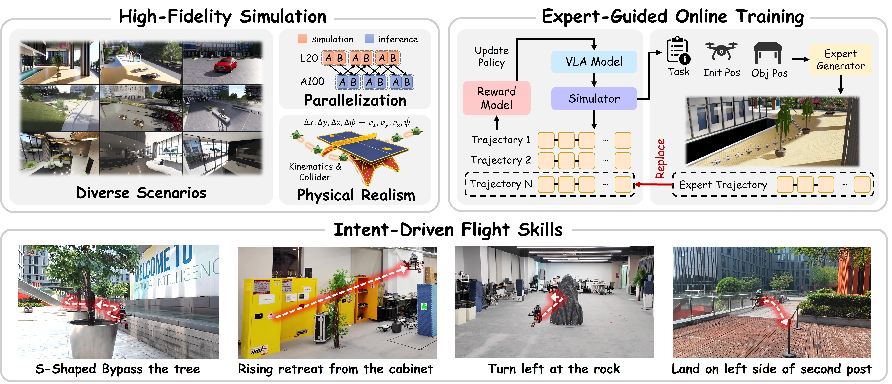
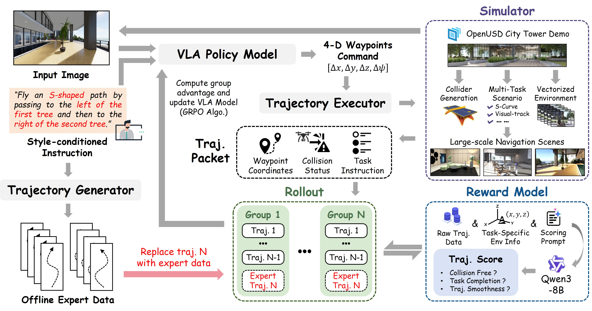
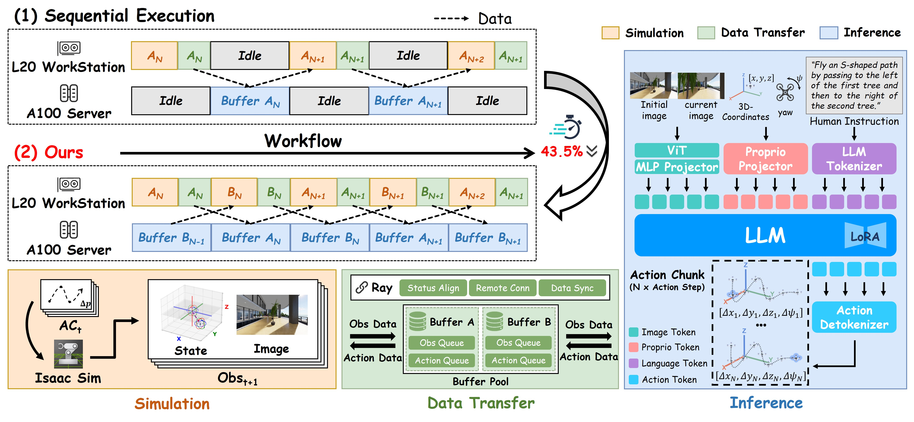

Towards Precise Intent-Aligned VLA Aerial Navigation via Expert-Guided GRPO
Anonymous submission under review
Abstract
Vision-Language-Action (VLA) models offer a promising end-to-end paradigm for unmanned aerial vehicles (UAVs) to accomplish complex tasks specified by fine-grained instructions. However, standard supervised fine-tuning (SFT) suffers from data scarcity, limited generalization, and weak supervision for nuanced and complicated human intents. Reinforcement fine-tuning offers a natural way to mitigate these challenges and align policy behaviors with human intents through designable feedback, but applying it to aerial navigation remains challenging due to inefficient exploration in expansive continuous spaces. To address these challenges, we introduce an efficient reinforcement learning (RL) framework for VLA-based aerial navigation. At its core, we propose EG-GRPO (Expert-Guided Group Relative Policy Optimization), which incorporates few-shot expert trajectories into group-relative optimization to stabilize online RL under sparse rewards. Additionally, we design a heterogeneous pipeline enabling parallel simulation and inference, which reduces rollout time by 43.5%. Across multiple tasks specified by complex human intents, EG-GRPO improves the success rate from 18.30% to 57.81% over the SFT baseline. These results demonstrate that our framework can move aerial navigation toward precise intent-aligned flight.

We introduce a reinforcement learning framework tailored for VLA-based 3D aerial navigation, which integrates a high-fidelity simulation and expert-guided online training to enable UAVs to acquire precise intent-aligned flight skills.
Simulation Demos
Real-World Demos
EG-GRPO
First, the VLA policy generates actions according to visual observations and nuanced instructions. Then, online trajectories are collected in parallelized simulations and combined with few-shot expert trajectories to construct mixed trajectory groups. Finally, the reward model evaluates these trajectories based on task performance, providing fine-grained rewards for updating VLA models.

Heterogeneous Parallelization of Inference and Simulation
Conventional serial execution alternates between simulation on RT-core GPUs (L20) and VLA inference on compute GPUs (A100), causing severe hardware idling. Our framework decouples these stages via a dual-group scheduling strategy with a double-buffer mechanism, reducing rollout time by 43.5%.
